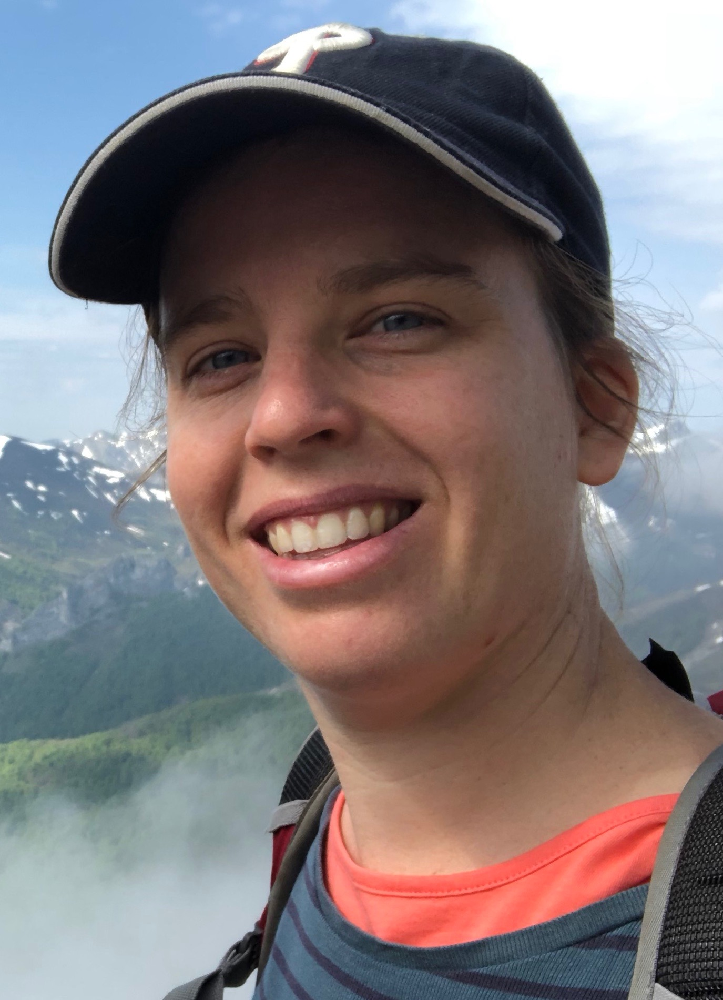

|  |
I am a Royal Society University Research Fellow and Associate Professor at University College London (UCL).
I am also an editor for the journal Discrete Mathematics.
Before joining UCL, I was a University Research Fellow at the University of Cambridge for a short spell.
Before that I was a Junior Fellow at the Institute for Theoretical Studies, ETH, Zürich, and a member of Prof. Benny Sudakov's group. I was also a Junior Research Fellow at Murray Edwards College, Cambridge.
I completed my PhD in 2015 in Cambridge, under the supervision of Prof. Béla Bollobás. Before that, I did Part III in Cambridge, and received a Master's degree from the Hebrew University of Jerusalem under the supervision of Prof. Ehud Friedgut.
Here is my CV (updated January 2024).
Here is a link to the UCL Combinatorics Seminar, currently organised by Amedeo Sgueglia.
Extremal and probabilistic combinatorics, Ramsey theory.
E-mail: s [dot] letzter [at] ucl [dot] ac [dot] uk.
Office: 25 Gordon Street, Room 406.
Elad Aigner-Horev (x2), Igor Balla, Natalie Behague (x2), Béla Bollobás (x2), Matija Bucić (x6), Omri Ben-Eliezer (x2), Clément L. Canonne, Oran Danon (x2), Victor Falgas-Ravry, António Girão (x3), Vytautas Gruslys (x7), Jie Han, Robert Hancock, Sven Heberle, Danny Hefetz (x2), Joseph Hyde, Tao Jiang, Tom Johnston, Nina Kamčv, Kyriakos Katsamaktsis (x3), Teeradej Kittipassorn, Yoshiharu Kohayakawa, Dániel Korándi (x2), Gal Kronenberg, Matthew Kwan, Richard Lang, Imre Leader, Jonathan Lee, Joonkyung Lee, Abhishek Methuku, Natasha Morrison (x5), Guilherme Oliveira Mota, Bhargav Narayanan (x2), Shannon Ogden, Olaf Parczyk, Alexey Pokrovskiy (x6), Julian Sahasrabudhe (x2), Amedeo Sgueglia (x3), Richard Snyder, Benny Sudakov (x10), Tuan Tran (x2), Erik Waingarten (x2), Mark Walters, Liana Yepremyan (x3).